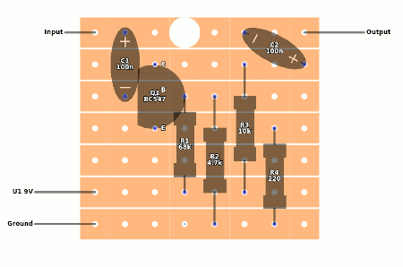

"Stripboard" a first of the two tools you need for generating schematic from a stripboard layout. Stripboard tool allows you to create netlist by placing components atop of a image with stripboard layout.
Press middle mouse button and drag to pan, use wheel for zoom.
Click on "BG Image" action button and choose image with stripboard layout. Supported are PNG, JPG, GIF and WEBP images. The image should appear on the screen.
Click on the "Grid size" action button. In modal dialog specify width and height of the stripboard layout measured in holes. For example following layout is 8 holes horizontally and 7 holes vertically:
You can change grid size at any time, but changing grid size erases copper cuts, if you want to add just one strip to the bottom, press "+1 strip" action button and new strip will be added to the bottom.
Once you have background image on screen and you have defined the grid size, you can place the grid. Choose "Grid placement" tool, then use left mouse button to click on the top-left hole, while holding mouse button pressed, drag mouse to the bottom-right hole and release the mouse. You will see green dots on the screen they should match the background image. If you make a mistake simply repeat this process until the holes are aligned.
After placing the grid you should see copper stripes atop of the background image. The copper is 50% transparent, you can increase or decrease the transparency of copper by moving the slider next to the "Copper" checkbox in the "Show" section.
In "Copper" section, choose "Cut" tool and click where the copper should be removed. Click again to add copper back in. Sometimes it is hard to see where the cuts are so you can uncheck the "Copper" chechbox or press "c" to temporarily show/hide copper.
Make sure you have all cuts, good stripboard layouts specify number of cuts, some of the cuts are hiding under the components.
Some layouts connects two or more strips with wire links. Choose "Link" tool in the "Copper" section. Press left mouse button where link starts, hold button pressed and drag mouse where link ends, release the mouse button.
Links must start and end on the board. If you need wire going out of the board, use "Connector" instead (see sections below).
If you make a mistake, choose "Select" tool (shortcut "s") and click on the link to select it (green outline). Press "Delete" keyboard key to delete selected link. Then you can choose "Link" tool and add new link.
Resistor, LDR, Capacitor, Inductor, Diode and LED are all added same the way. Choose the component, e.g. "Resistor" in "Component" section, then press the left mouse button over hole where component starts, hold mouse button and drag mouse where the component ends, then release the mouse.
After you add component, it's properties dialog will open, there you can define name and value of component. Name must be unique (pre-filled name is unique). Value is any string. Confirm adding component by pressing "Add" button in properties dialog.
Freshly added component is selected (green outline). You can flip polarity of selected component by pressing "f" key. You can delete selected component by pressing "Delete" key.
Choose "Transistor" tool from the "Components" section. Then press the left mouse button over hole where transistor starts, hold mouse button and drag mouse where the transistor ends, then release the mouse.
Transistors must span exactly 3 holes. There are 4 ways to add transistor. Click and drag 3 holes left, 3 holes right, 3 holes up or 3 holes down. If the span is anything other than 3 you will see label telling you that span must be 3 holes.
Starting pin is "Emiter", but once you add the transistor you can change the pinout to anything else. When properties dialog appears, you can change transistor name and "Model". In model dropdown you can choose one of the presets, e.g. 2N3904 or J201. When you change the model, the Kind, Package and Pinout will be filled in. When you press "Add" button this transistor will be added.
You can open properties dialog by double-clicking on transistor. Then you can change the model.
If your transistor is not in the Model dropdown, you can add custom transistor. Doubleclick on transistor, change Model to "Custom". This will unlock Kind/Package/Pinout dropdowns. You can now change any parameter.
For example you want 2SK30A. Choose Model=Custom, then change Kind to "N_JFET", change Package to "TO-92", and change Pinout to "SGD".
Pinout is from left to right when you look on the transistor's from the front where the inscriptions are.
Since you changed Model from 2N2222 to Custom, the information about model would be lost, you append real model to transistor's name, in dialog you can change name from "Q1" to "Q1 2SK30A".
Note that there are no checks in Custom model, you can choose anything (even NPN with DGS pinout). So make sure you are using correct parameters in Custom model.
Same as bipolar transistors but in the schematic they will have different symbol and their pinout is combination of D, G and S (Drain/Gate/Source) instead of E/B/C (Emitter/Base/Collector).
Same as bipolar transistor but the schematic symbol will be different. Pinout is same as NPN/PNP - E/B/C.
Because voltage regulators are in the same package as transistors (TO-92. TO-220), the are in the transistor tool. P_REGULATOR is regulator for positive voltage, e.g. 78L05, N_REGULATOR is for negative voltage e.g. 79L05.
In voltage regulators pinout is I for input, G for ground or common pin, O for output.
Trimmer is potentiometer placed directly on stripboard. If you want external potentiometer connected with wires see sections below on "Connector pot".
Trimmer is placed on board in a similar way as transistor. Choose "Trimmer" tool in "Components" section. Press the left mouse button over hole where trimmer starts, hold mouse button and drag mouse where the trimmer ends, then release the mouse. Wiper will be placed on one side. If you want wiper on the other side start from the other hole, or press "f" to flip the trimmer (after you add the trimmer).
Just like with transistors span must be exactly 3 holes.
When you add trimmer a properties dialog will be displayed. There you can define value (any string) and unique name.
Use "DIP" tool to add any Dual Inline Package chip. Press the left mouse button over hole where first pin is (top left corner), hold mouse button and drag mouse where the bottom right pin is, then release the mouse. Dip packages are 4 holes wide.
Once you add DIP package, properties dialog will be shown. If you chose size correctly, e.g. 4x4 for TL071, the Value dropdown will have all models with only this size. You can select TL071. When you choose Value the pinout will be filled in.
The pinout is comma-separated list of pin names, starting with pin 1 and ending with last pin, e.g. 8th pin. For TL071 the pinout is OFS1,IN-,IN+,V-,OFS2,OUT,V+,NC.
In Schematic dropdown you can choose how you want this chip to be represented in schematic tool. For TL071 since it is single opamp, only 4 options will be enabled. The meaning of these values are:
| Schematic | Meaning |
|---|---|
| DIP | The chip will be displayed as is, rectangle with pins on both sides. |
| DIP8 with single opamp | Rectangle with 2x4 pins, inside rectangle will opamp schematic connected to pins 2, 3, 6 |
| DIP8 with dual opamp | Rectangle with 2x4 pins, inside rectangle will be 2 opamp schematic connected to pins 1, 2, 3, 5, 6, 7 |
| DIP with quad opamp | Rectangle with 2x7 pins, inside rectangle will be 4 opamp triangles connected to pins |
| Opamp 1 triangle | There will be no dip package but only 1 opamp triangle with 3 pins (IN+, IN-, OUT). Rails will be 2 separate pins. |
| Opamp 1 triangle + offset circuit | There will be no dip package but only 1 opamp triangle with 3 pins (IN+, IN-, OUT). Rails will be 2 separate pins and 2 extra pins for offset circuit. |
| Opamp 2 triangles | There will be no dip package but only 2 opamp triangles with 3 pins (IN+, IN-, OUT). Rails will be 2 separate pins. |
| Opamp 4 triangles | There will be no dip package but only 4 opamp triangles with 3 pins (IN+, IN-, OUT). Rails will be 2 separate pins. |
In the stripboard tool, when you choose "Select" tool, DIP packages and not selected when you click inside them, but when you click on/near their pins. This allows you to choose components that may be under the dip packages (like links).
There are only most common DIP chips specified in this tool, if you need chip that is not on the list, you can add custom DIP chip.
For example you want to add LM13600 chip. Add 4x8 dip chip, then in the dialog choose model "Custom". In the pinout type AB1,DB1,IN1+,IN1-,OUT1,V-,BI1,BO1,BO2,BI2,V+,OUT2,IN2-,IN2+,DB2,AB2 or even P1,P2,P3,P4,P5,P6,P7,P8,P9,P10,P11,P12,P13,P14,P15,P16. Pin names only matter if you want to use one of the known schematics, like dual opamp, then you would have to use same pin names as on of the existing models. In the schematic choose DIP.
If you are adding DIP chip with known schematic, e.g. dual opamp, you can choose schematic "Opamp 2 triangles" but then your pin names must be the same, e.g. OUT1,IN1-,IN1+,V-,IN2+,IN2-,OUT2,V+ however the order of your pinout can be different. You can use NC1,NC2,... for not-connected pins.
Connectors are wires comming out of the board. Usually from the sides but they can also come from the middle of the board.
All connectors are added like 2-pin components, they have start and end. Start must be on board, end must be outside of the board.
Choose the connector, e.g. "Input" in "Connector" section, then press the left mouse button over hole where connector starts, hold mouse button and drag mouse where out of the board where the connector should ends, then release the mouse. Some connectors will show properties dialog where you must specify certain properties.
To show properties dialog choose "Select" tool and double-click on connector.
First three connectors are Input, Output and Ground. Almost all boards have them. Once you add them there will not be properties dialog, there is nothing to change. You can only delete them.
After you add battery connector, in dialog you can set voltage. Use "9" for positive 9V battery. If you use negative values like -9 the battery symbol will be reversed in schematic.
Pot connector is for potentiometers that are outside of the stripboard. If you want trimmer on the board use trimmer component instead.
When you add pot connector, it's properties dialog will appear. For each pot you nead 2-3 pot connectors with the same name and same resistance. Then in each pot connector you check the checkbox which correspond to that pin.
For example you have 100k Volume pot. Add 3 pot connectors at correct strip. In all 3 connectors' dialog choose Resistance 100k and name "Volume". This needs to be same for all 3 pot connectors. Then in each connector check the correct pin checkbox. 1 is start, 2 is wiper, 3 is end of the pot. Some pots share wiper with either start or end, you can check more than one checkbox, for example checkbox 1 and 2 on one connector, checkbox 3 on the other connector.
This connector is for Single Pole Single Throw connector. It has 2 pins so you need 2 connectors with the same name. After each connector is added, in dialog choose which pin it is.
This connector is for Single Pole Dual Throw connector. It has 2 or 3 pins so you need 2 or 3 connectors with the same name. After each connector is added, in dialog choose which pin it is. If you only use 2 connectors it would be like SPST.
Basically 2 linked SPDT switches. In the dialog you can choose from 2 different schematics, whichever you like. You can leave some pins unconnected.
If you want to have the switches far apart in schematic, choose two SPDT switches (with different names) so that you can move them independently.
For any other wire going out of stripboard use other connector. In schematic it will appear as single pin with small triangle and name.
Once you are done, you can export stripboard by pressing "Export" action button. It will download file with .stripboard extension. You will be asked for a filename, choose something short, e.g. "fuzz face".
You can import previously exported files by pressing "Import" action button and choosing file with ".stripboard" extension.
Netlist is list of components and networks they are connected to. Normally you don't need this, but it can be used to generate netlist and then opening schematic tool and importing the netlist manually there.
If you want to create new schematic, press "Clear" action button and then start from section 1.1 by adding new background image.
If you make a mistake, press "Undo" action button or press "Ctrl+z" key to undo most recent change. If there are no more steps to undo you will hear a beep.
Finally when you are done with placing components on stripboard, you press the "Schematic" action button and schematic tool will be opened and your stripboard will be imported there.
"Schematic" is second of the two tools, first one being "Stripboard". Once you are done with components placement, you press the "Schematic" button and this tool will appear.
You will be asked if you if you want to import netlist, e.g. "Do you want to import netlist fuzz_face". Simply press OK and you will see all components there. If for some reason you don't want to import changes you made in Stripboard, press Cancel and you will see whatever you had in Schematic before.
Press middle mouse button and drag to pan, use wheel for zoom.
Initially components will be sorted by type and alphabetically. From here you can click on component to select it and drag it with mouse to other location. Press "r" to rotate components, press "f" to flip component horizontally.
It's a good idea to place input on the left, battery on the right, ground in the bottom-right corner, transistors and chips in the middle. Then go from input and follow which components are connected to input and move them closer to input. If they are connected to ground, move them closer to the bottom, if they are connected to battery move them up.
After 10 or 20 minutes of moving, rotating and flipping, you should have readable schematic.
If you make a mistake, press "Undo" action button or press "Ctrl+z" key to undo most recent change. If there are no more steps to undo you will hear a beep.
Press "Select" tool button or press "s" key to switch to default editing mode. In this mode when you click on component it will have red outline and you can move it with mouse, rotate it by pressing "r" or flip it by pressing "r".
Only use this tool when you are almost finish and all you want is to make lines more ortogonal. Press mouse near network and it will add guide point to the nearest network, keep mouse pressed and drag it where you want the wire to go, release mouse when done.
Hold "shift" key while you press mouse button to erase guide points.
Press "Sort components" action button to move all components back to it's original position. Undo if you used it accidentally.
Use "Export schematic" to download current schematic as .schematic file. You can later import it back.
Use "Import schematic" to import previously exported .schematic files.
Press "Clear" action button to clear all components and nets. Then you can import netlist or schematic.
When you have mostly done schematic, with guide wires everywhere, and then you start making major changes it is easier just to erase all guide wires and add them later. Click on "Clear all guides" action button and all guide points will be gone.
When you are happy with your schematic, press "Screenshot" action button and black-and-white screenshot will be generated at default zoom. If you want screenshot at current zoom, hold "shift" key while pressing screenshot button.
"Stripboard" action button will get you back to stripboard tool, for example if you want to check something, or change value of some component. When you make change in Stripboard, press Schematic button which will get you back here, you will be asked if you want to import netlist, choose OK and you will see changes.
If you make some major changes, it is possible that guide points are no longer correct so erase them one by one, by holding shift or all at once.